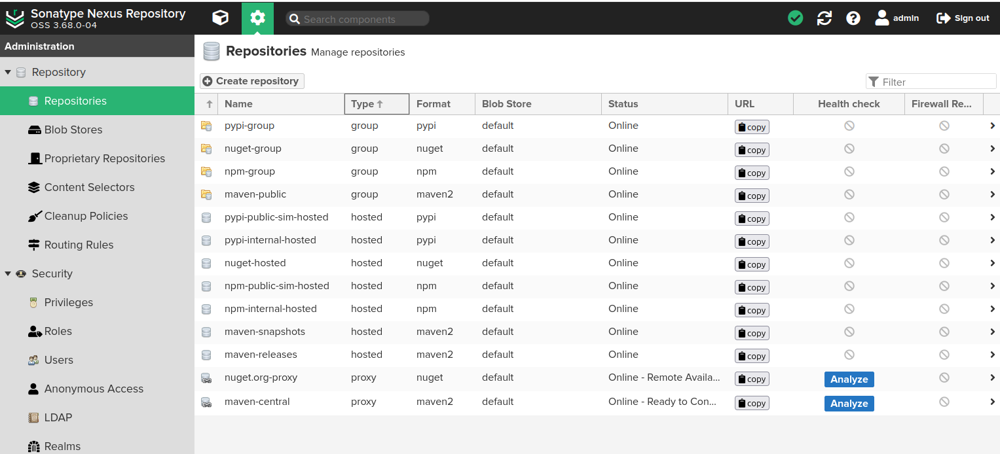
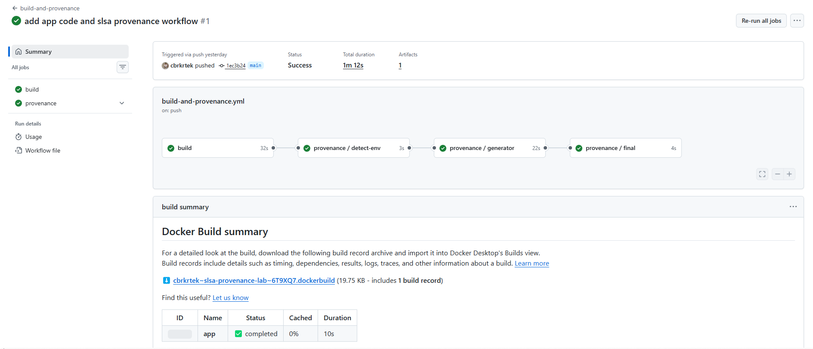
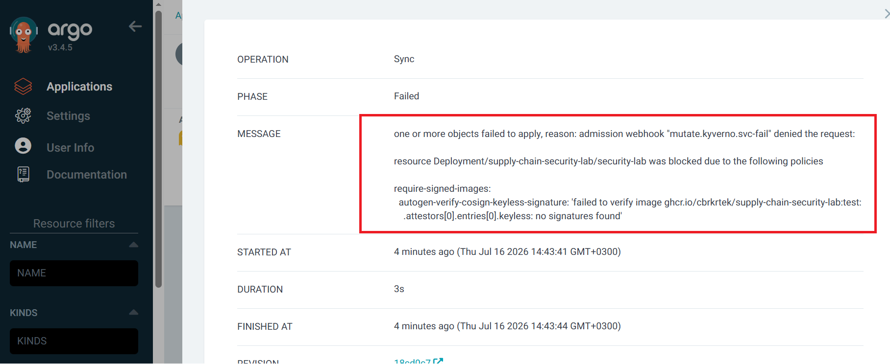
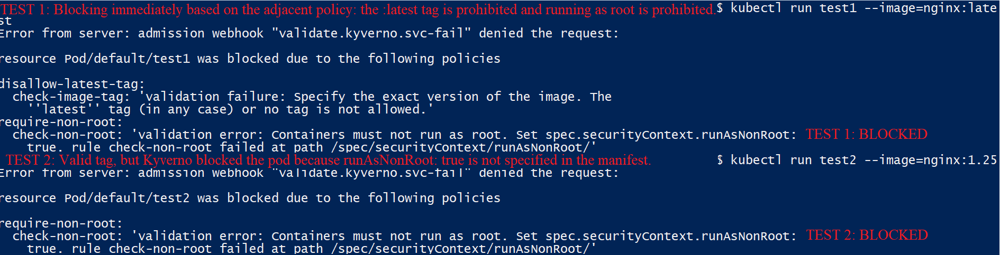
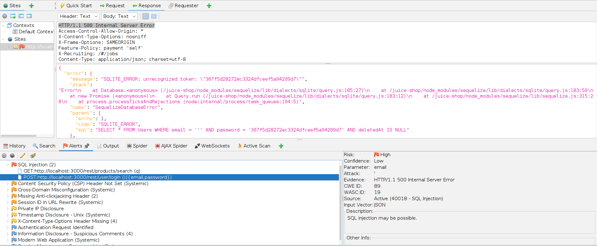
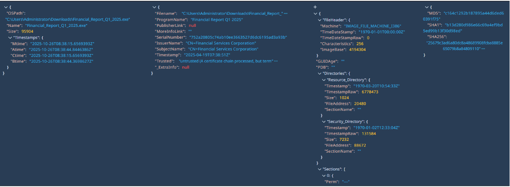
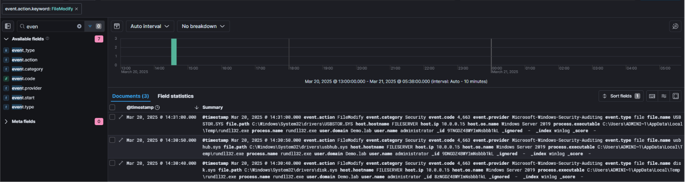
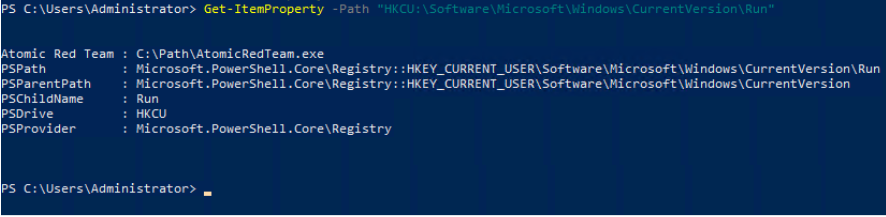
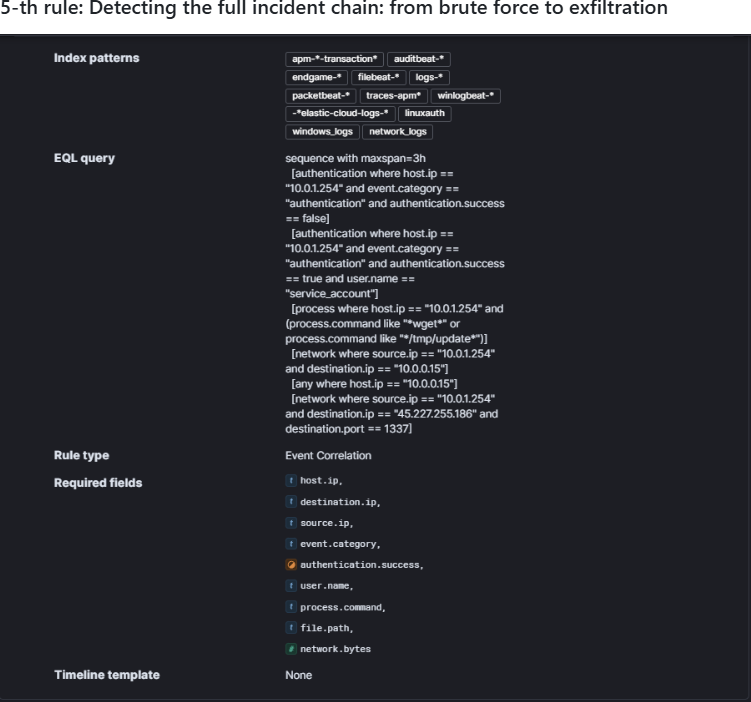

Dependency Confusion Attack Lab — Nexus Repository OSS
Built and exploited a Dependency Confusion supply-chain vulnerability against self-hosted Sonatype Nexus OSS across npm and pip ecosystems. Replicated enterprise group repository merge flaws (highest-version resolution) and evaluated mitigations: client-side scoping vs server-side routing rules.
View Repository ↗
SLSA Provenance vs Cosign Signing Lab
Built a GitHub Actions pipeline generating SLSA Build Level 3 provenance for container images, verified with slsa-verifier, and attempted forgery. Compared directly against Cosign keyless signing. Full write-up in Articles.
View Repository ↗
Software Supply Chain Security Lab
End-to-end supply chain lab featuring keyless image signing via Cosign/OIDC, Syft/Grype SBOM triage, Kyverno signature enforcement at K8s API server, ArgoCD GitOps, and Trivy Operator runtime scanning. Reduced CRITICAL CVEs from 3→0.
View Repository ↗
DevSecOps Engineering Lab: Scalable Security Infra
Live hands-on lab spanning 4-gate CI/CD pipelines, Linux hardening, Prometheus/Grafana/Loki observability, Terraform IaC security, K8s RBAC, and 3-namespace Zero Trust isolation with 7 Kyverno policies.
View Repository ↗
DevSecOps Pipeline — OWASP Juice Shop
Built a DevSecOps pipeline with Trivy (SCA), OWASP ZAP (DAST), and CycloneDX SBOMs uploading SARIF directly to GitHub Security. Blocked deployment on CRITICAL findings and mitigated SQLi/CORS at NGINX reverse proxy.
View Repository ↗
End-to-End SOC Workflow: Phishing & Malware Analysis
Designed SOC infrastructure utilizing Velociraptor EDR, TheHive, and Cortex SOAR. Automated IoC enrichment via VirusTotal/AbuseIPDB APIs (reducing manual triage time by ~80%) and mapped TTPs to MITRE ATT&CK.
View Repository ↗
Incident Response: USB & LOLBins Data Exfiltration
Simulated domain admin compromise and USB exfiltration. Engineered KQL threat hunting queries in ELK SIEM to detect anomalous logins and rundll32.exe USB driver mounting. Authored a 6-stage IR Playbook.
View Repository ↗
Endpoint Security: Windows Persistence Detection
Emulated registry & service persistence using Atomic Red Team (T1547.001, T1543.003). Audited Event ID 7045 and active TCP C2 connections to execute full Containment, Eradication, and Recovery lifecycle.
View Repository ↗
Adversary Lifecycle Analysis in Elastic SIEM
Full-cycle SOC investigation reconstructing adversary movement in hybrid infrastructure. Developed 5 KQL correlation rules, built 5 custom SIEM dashboards, and mapped TTPs directly to MITRE ATT&CK.
View Repository ↗